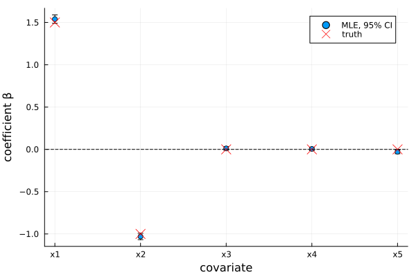
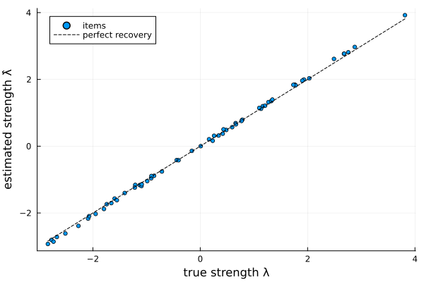
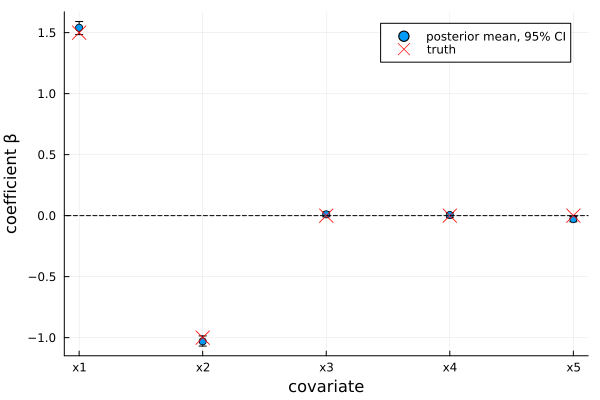
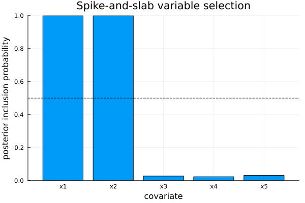

Covariate Thurstone Case V models
When the items carry covariates, a Covariates Thurstone Case V model parameterises each latent strength as a linear combination of them,
\[\lambda_i = z_i^\top \beta, \qquad P(i \text{ beats } j) = \Phi\big((z_i - z_j)^\top \beta\big),\]
so the unknown is the coefficient vector $\beta \in \mathbb{R}^p$ instead of the $K$ item strengths. Because the comparison depends only on the covariate difference $z_i - z_j$, this is probit regression on the difference design — the probit counterpart of the covariate Bradley–Terry model.
An overall intercept (a covariate constant across items) cancels in the differences $z_i - z_j$ and is not identifiable. CovariateData rejects constant columns.
The same three workflows are available as for Bradley–Terry:
- Maximum likelihood (
MLE) — point estimates of $\beta$. - Stepwise selection (
StepwiseMLE) — greedy AIC/BIC selection. - Bayesian (
Bayesian) — Albert–Chib Gibbs with aNormalPrior, aHorseshoePriorfor global-local shrinkage, or aSpikeSlabPriorfor selection with posterior inclusion probabilities.
Simulating covariate data
We simulate 60 items, each with five covariates. Only the first two drive the strengths ($\beta = (1.5, -1.0)$); the other three are noise. Comparisons are drawn from the discriminal-process story (unit-variance normal noise on the strength difference):
using ComparativeJudgement
using Random
rng = MersenneTwister(2025)
K = 60
β_true = [1.5, -1.0, 0.0, 0.0, 0.0]
p = length(β_true)
Z = randn(rng, K, p)
λ_true = Z * β_true
labels = ["item" * lpad(i, 2, '0') for i in 1:K]
wins = zeros(Int, K, K)
for i in 1:K, j in (i + 1):K
for _ in 1:8 # 8 comparisons per pair
if (λ_true[i] - λ_true[j]) + randn(rng) > 0
wins[i, j] += 1
else
wins[j, i] += 1
end
end
end
cd = CovariateData(PairwiseData(wins, labels), Z, [:x1, :x2, :x3, :x4, :x5])Maximum likelihood
fitted = fit(ThurstoneCaseVCovariates(), MLE(), cd)
coefnames(fitted) .=> coef(fitted)5-element Vector{Pair{String, Float64}}:
"x1" => 1.539663814090917
"x2" => -1.0298017934585606
"x3" => 0.011149331012279075
"x4" => 0.005739882435160903
"x5" => -0.028712644616585754coef returns $\hat\beta$ (aligned with coefnames) — close to the true $(1.5, -1.0, 0, 0, 0)$. stderror gives standard errors (from the inverse Fisher information) and confint the Wald confidence intervals (a k×2 matrix). Plotting the estimates with their 95% intervals separates the two signal covariates from the three noise ones:
using Plots
using Statistics: mean
β̂ = coef(fitted)
ci = confint(fitted; level=0.95)
lo, hi = ci[:, 1], ci[:, 2]
scatter(1:p, β̂; yerror=(β̂ .- lo, hi .- β̂), label="MLE, 95% CI",
xticks=(1:p, string.(cd.names)), xlabel="covariate", ylabel="coefficient β",
legend=:topright)
scatter!(1:p, β_true; marker=:x, markersize=7, color=:red, label="truth")
hline!([0]; color=:black, linestyle=:dash, label="")
strengths recovers $\lambda = Z\hat\beta$ (centred), tracking the truth:
λ̂ = strengths(fitted)
λ_true_c = λ_true .- mean(λ_true)
scatter(λ_true_c, λ̂; label="items", markersize=3, legend=:topleft,
xlabel="true strength λ", ylabel="estimated strength λ̂")
plot!(identity, extrema(λ_true_c)...; linestyle=:dash, color=:black,
label="perfect recovery")
Stepwise selection
StepwiseMLE greedily adds/removes covariates to optimise an information criterion (:AIC or :BIC), in direction :forward, :backward, or :both:
selected = fit(ThurstoneCaseVCovariates(),
StepwiseMLE(direction=:both, criterion=:BIC), cd)
(coefnames(selected) .=> coef(selected), selected.result.selected)(["x1" => 1.5406228677378275, "x2" => -1.0291105815218973], [1, 2])BIC keeps only the two real covariates; the search path is in selected.result.trace.
Bayesian inference
A Bayesian fit returns posterior draws of $\beta$. With the default NormalPrior:
method = Bayesian(n_samples=1500, n_burnin=500)
bayes = fit(ThurstoneCaseVCovariates(), method, cd; rng=MersenneTwister(1))
confint(bayes; level=0.95)5×2 Matrix{Float64}:
1.48403 1.59107
-1.06898 -0.985683
-0.00923684 0.0304494
-0.0169119 0.0248519
-0.0501736 -0.00746901bm = coef(bayes)
ci = confint(bayes; level=0.95)
lo, hi = ci[:, 1], ci[:, 2]
scatter(1:p, bm; yerror=(bm .- lo, hi .- bm), label="posterior mean, 95% CI",
xticks=(1:p, string.(cd.names)), xlabel="covariate", ylabel="coefficient β")
scatter!(1:p, β_true; marker=:x, markersize=7, color=:red, label="truth")
hline!([0]; color=:black, linestyle=:dash, label="")
Horseshoe shrinkage
The HorseshoePrior pulls small coefficients hard toward zero while leaving large ones almost untouched:
hs = fit(ThurstoneCaseVCovariates(), method, cd, HorseshoePrior();
rng=MersenneTwister(2))
coefnames(hs) .=> coef(hs)5-element Vector{Pair{String, Float64}}:
"x1" => 1.5444602218673948
"x2" => -1.031912141486247
"x3" => 0.010599212338886508
"x4" => 0.005220885333735786
"x5" => -0.026828284231358947Spike-and-slab selection
The SpikeSlabPrior gives a per-covariate posterior inclusion probability via inclusion_probabilities — a Bayesian analogue of stepwise selection:
ss = fit(ThurstoneCaseVCovariates(), method, cd, SpikeSlabPrior();
rng=MersenneTwister(3))
pip = collect(values(inclusion_probabilities(ss)))
bar(string.(cd.names), pip; legend=false, ylims=(0, 1),
xlabel="covariate", ylabel="posterior inclusion probability",
title="Spike-and-slab variable selection")
hline!([0.5]; color=:black, linestyle=:dash)
The two real covariates sit near 1 and the three noise covariates near zero — recovering the true sparsity pattern.